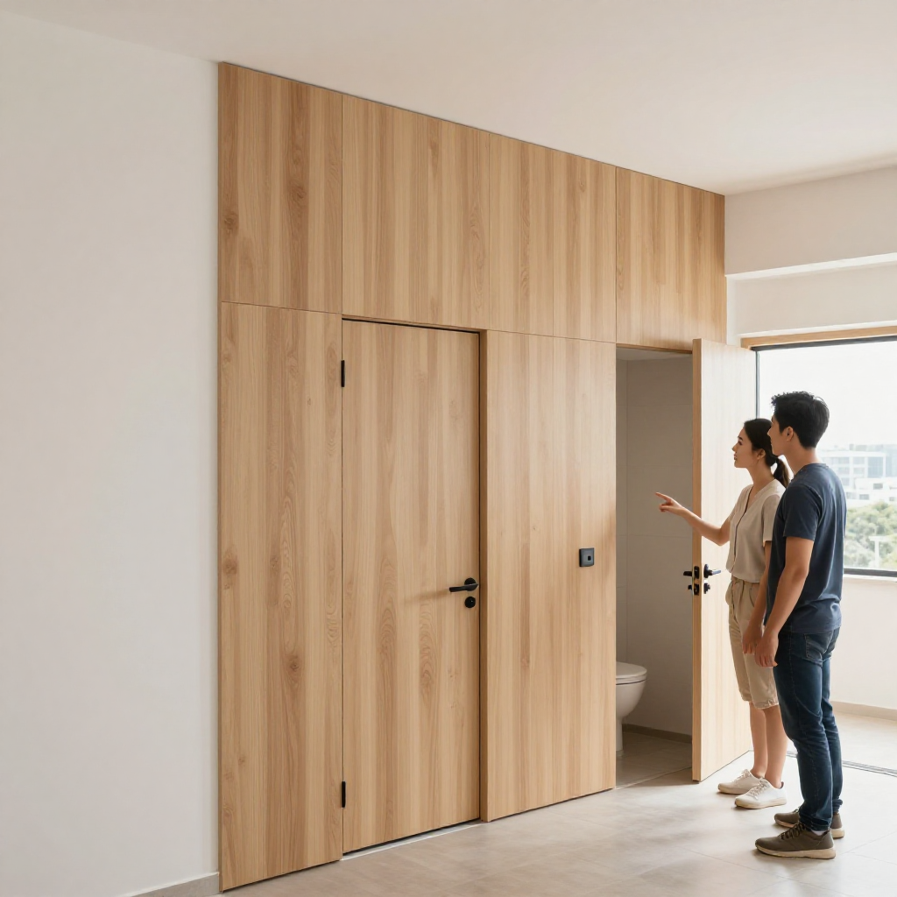
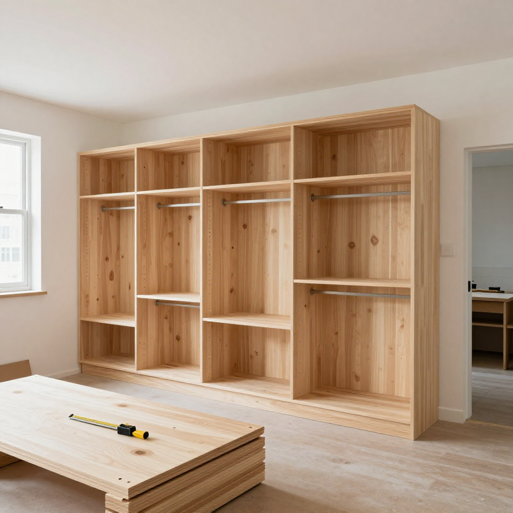
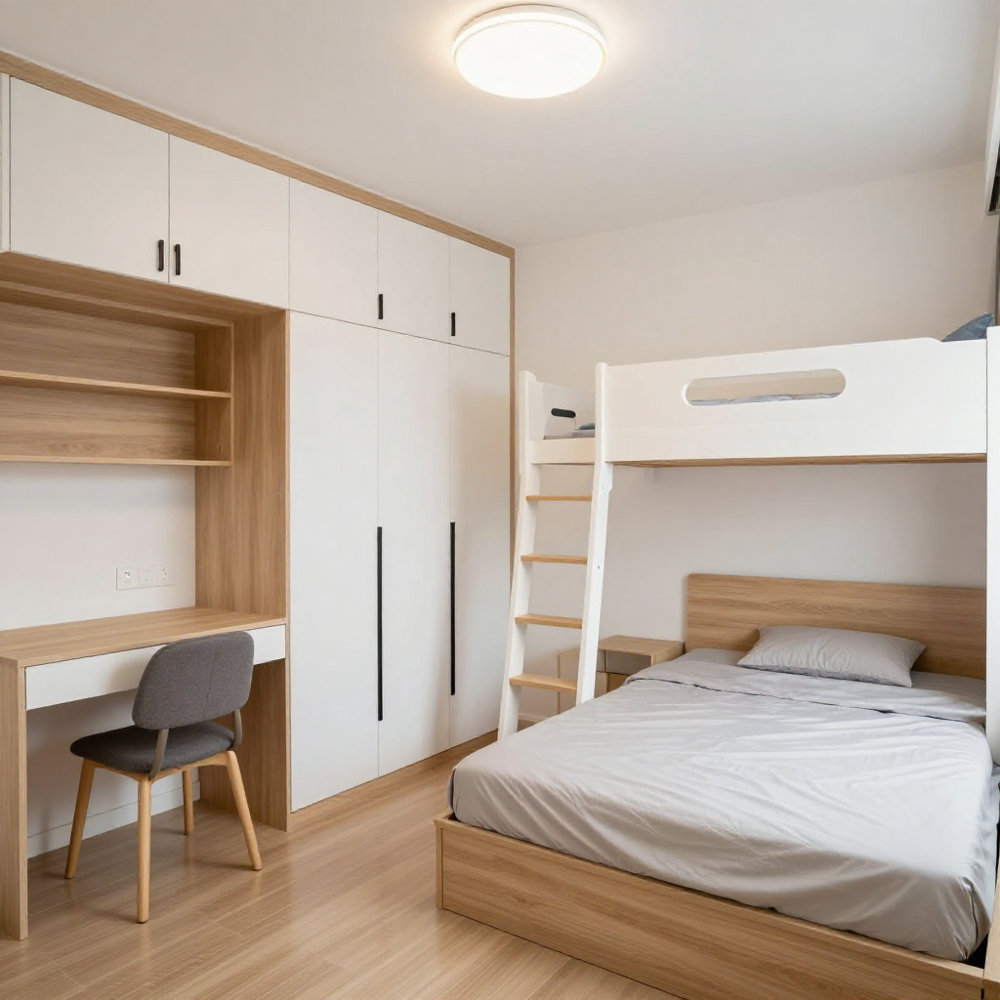

粉嶺鳳凰嶺邨開門見廁點算？張丹楓3.5萬半日裝完430呎3-4人單位

📍 場景：粉嶺鳳凰嶺邨（北都新公屋，6座約6,168伙，2026年起分期入伙）｜主講：張丹楓（8年全屋定制）｜設計溝通：雲蕾｜WhatsApp 報價：852 5190 2328
序幕：一條WhatsApp訊息
我係張丹楓，做咗8年裝修，專做香港小戶型定制家具。我太太雲蕾負責設計同客戶溝通，我負責工廠同現場安裝。今日呢單好典型——鳳凰嶺邨啱啱派匙，阿康一家四口（兩公婆加阿媽同一對仔女），分到一個約430呎3-4人單位，諗住中秋前入伙。
鳳凰嶺邨係北都首批新公屋，間隔四正，但430呎住四五個人，傳統現成傢俬一定唔夠位。呢啲位，就係要靠全屋定制逐吋榨。（屋苑規模、入伙安排以房委會正式通知為準。）
第一幕：開門見廁，細房細到喊
我同雲蕾上門度尺，一開大門就見到廁所門——新公屋通病，私隱又差，風水又話退財。阿康老婆阿儀即刻皺眉：「師傅，咁點算？親戚上嚟一開門就見到廁所，好尷尬。」
「仲有呢個廳，放完鞋櫃電視櫃雪櫃，連張四人檯都擺唔落，係咪要趴喺茶几食飯？細房仲細，放完床連衣櫃書枱都塞唔入。」
「師傅，我哋預算三萬五左右，全屋搞掂做唔做到？出面有人報五萬，我哋負擔唔起。」
「三萬五做得到，但要揀啱打法：廁所做暗門、客廳做卡座、主人房做地台、細房做上床下櫃。唔好買現成，一件都唔好買，買咗就塞死。」
「阿儀你聽我講，暗門唔係貴嘢，係將廁所門同隔籬牆身合體做一幅木紋飾面，關上門成幅牆一樣，空間感即刻大。細房上床瞓、下層做衣櫃連書枱，一間當兩間用。」

第二幕：工廠開工，材料唔好慳錯位
返到旺角工廠，我盯住四樣嘢落單：廁所暗門連飾面牆、客廳卡座連伸縮檯、主人房全地台加到頂衣櫃、細房上床下櫃連樓梯櫃。全部18mm E0級多層實木夾板，免漆暖白色配淺木紋——新公屋最忌現場噴油，塵大味大，管理處都唔鍾意。
「丹楓，鳳凰嶺邨呢批新樓，牆身批盪都算企，但門框有啲唔係完全垂直。卡座同地台記得留5mm收口罅，現場打膠收，唔好頂死。」
「收到。仲有鉸鏈全部304不鏽鋼，粉嶺近海又濕，鐵鉸一個風季就鏽。地台板底加防潮墊，新樓地台濕氣未散透，唔鋪第日會脹。」

第三幕：安裝當日，半日奇蹟再現
安裝日約朝早九點，我帶兩個師傅上門，預製件唔使現場開料，幾乎冇塵冇噪音。暗門先裝，關上嗰刻阿儀嗌出聲：「唔見咗道廁所門！」卡座接住上，底部揭得開收換季被，伸縮檯拉出嚟一家四口啱啱好。
主人房全地台一起，行李篋厚棉被一次過收晒；到頂衣櫃側面伸出床頭櫃，慳返個床頭几位。細房上床下櫃最屈機：上層瞓覺，下層衣櫃連書枱，阿女即刻霸咗張枱話做功課。十二點半收工，我哋清埋垃圾，阿康媽咪摸住地台話：「呢個穩陣，孫仔跳都唔驚。」

尾聲：價錢公開，你參考吓
| 項目 | 規格 | 價錢 |
|---|---|---|
| 廁所暗門連飾面牆 | 木紋免漆板 | $2,800 |
| 客廳卡座+伸縮檯+吊櫃 | 底部收納+側抽屜 | $8,800 |
| 主人房全地台+到頂衣櫃 | E0夾板+304鉸鏈 | $9,500 |
| 細房上床下櫃連樓梯櫃 | 衣櫃連書枱組合 | $8,800 |
| 安裝費 | 上門裝嵌調校清垃圾 | $5,100 |
| 總計 | $35,000 |
呢個係2026年9月報價，板材五金價會浮動。記住三句：公屋唔鑽牆用可移動設計、新樓地台要鋪防潮、鉸鏈一定要304。鳳凰嶺邨街坊想趕入伙，先度尺後落單，唔好網上估完就買現成傢俬，到時塞唔入仲衰。
❓ 鳳凰嶺邨收樓三問
Q1：鳳凰嶺邨幾時入伙？430呎3-4人單位夠住嗎？
屋苑約6,168伙2026年起分期落成，派匙以房委會通知為準。430呎住3-4人靠現成傢俬一定唔夠，暗門+卡座+地台+上床下櫃四招先榨得乾每吋位。
Q2：開門見廁點化解最平？
廁所門同隔籬牆身合體做暗門飾面，關門即隱形，私隱空間感一次解決，唔使拆牆唔使改喉，公屋規例零風險。
Q3：新公屋裝修有咩唔做得？
結構、外牆、窗、喉管公用設施唔好亂郁，動工前睇房署租約同屋邨辦事處指引。柜體用可移動設計，日後搬走拆得走，驗樓收樓先驗窗防水同地台空鼓。
提示：圖片為 SiliconFlow Z-Image-Turbo AI 生成的場景示意圖，不是鳳凰嶺邨實景或任何住戶單位。屋苑伙數、入伙安排、單位面積以房委會正式文件為準；裝修規例以房署租約及屋邨辦事處要求為準。